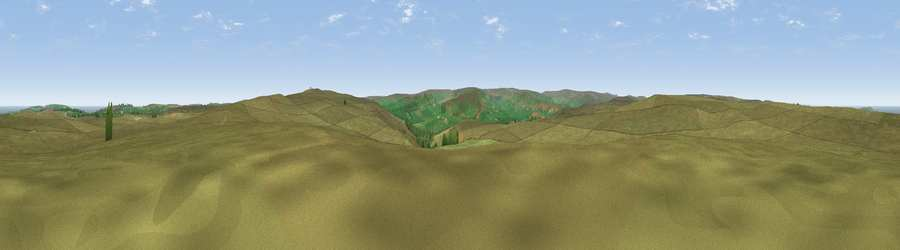

Viewpoint near Danby
#14691 in England · top 35% of its area beats it · near DanbyThe view, rendered

A 360° render of this exact spot computed from the terrain model, tree cover and land cover — summer colours, afternoon light, calibrated against photographs of famous viewpoints. Real trees, hedges and buildings will differ in detail.
The panorama
Grey silhouette: terrain skyline in each direction (720 bearings, Earth curvature and refraction included). Dashed green: skyline with trees (+15 m) and buildings (+8 m) as obstacles. Blue strip: how far the ground is visible on each bearing.
Where the view opens
Wedge length = distance to the farthest visible ground on that bearing (vegetation-aware). Rings at 10, 25 and 50 km.
What fills the view
96% grassland · 2% woodland · 1% cropland · 1% water
Angular shares of the visible panorama (visual magnitude), not map area. Landscape diversity 0.10 (0–1 Shannon).
Key numbers
More beautiful places nearby
The staircase of upgrades: each row has a higher view potential than everything closer. Driving times are estimates from straight-line distance, calibrated against real road routing — check an actual route before setting out.
| Place | Direction | Drive | Score |
|---|---|---|---|
| Danby Beacon | SE · 3 km | ~7 min | 73.4 |
| Viewpoint near Margrove Park | NW · 7 km | ~14 min | 74.2 |
| Viewpoint near Roxby | ENE · 7 km | ~15 min | 78.2 |
| Viewpoint near Charltons | WNW · 9 km | ~18 min | 80.6 |
| Viewpoint near Charltons | NW · 9 km | ~18 min | 81.1 |
| Rockhole Hill | NNE · 9 km | ~18 min | 84.4 |
| Viewpoint near Easington | NNE · 9 km | ~18 min | 86.9 |
| Viewpoint near Easington | NNE · 10 km | ~19 min | 90.2 |
54.48729, -0.89820 · source: screening · position refined by local search. Computed location — check access rights before visiting.